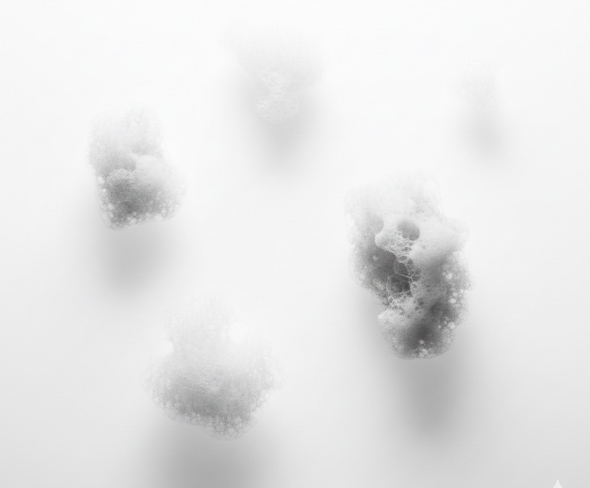
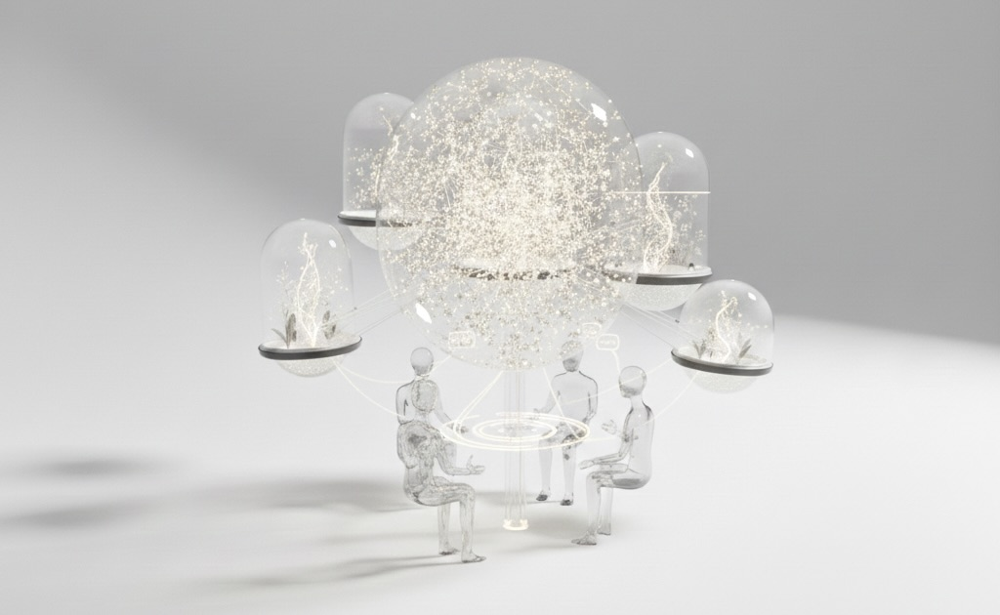
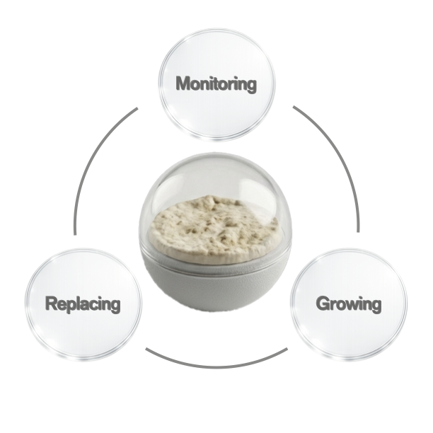

MISSION
宇宙でも“待つ・育てる・分かち合う”体験を。
収穫や発酵、食卓での会話――人間が古来より続けてきた営みを、宇宙でも日々の小さな収穫として実現します。

VISION
食を通じて、宇宙に新しい文化層を育てる。
クリームの変化を待ち、みんなで観察し、語り合う体験は、古代の発酵食品や収穫祭から現代の食卓まで、人類の歴史と宇宙生活をつなぎます。

VALUE
続けることで深まる体験。
日々の食の変化が、個人と集団の記憶・文化となり、宇宙でも新たなレイヤーを築きます。
VALUE 01
Small Rituals, Big Impact
毎日3分の儀式で、休息の質と生活のリズムを整えます。

VALUE 02
Change You Can Share
気泡・層・粘度の変化が、自然な会話の入口になります。

VALUE 03
Effortless by Design
操作は最小限。続けたくなる“気持ちの軽さ”を設計します。